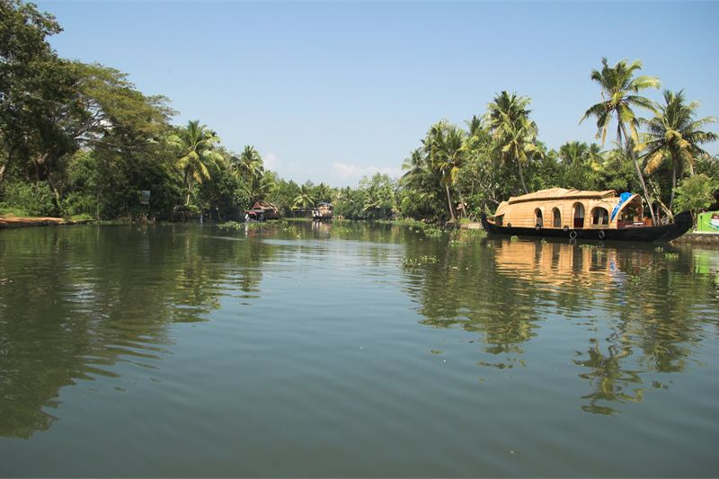

How these hotels were researched
▼- Rates: compared across more than one booking platform on the same day, quoted as a range with the month checked. Not a quote, and they move.
- Guest reviews in bulk: looking for complaints that repeat across many months, not single bad nights.
- Location: checked against a map, measured to the thing you actually came for.
- Real cost of entry: taxes, compulsory meal plans, transfers, and what is not included in the headline rate.
- What I could not confirm is said plainly in the text rather than filled in.
Most people arrive in Kerala planning to sleep on a houseboat and leave having realised one night was plenty. That is not a criticism of houseboats. It is a scheduling problem that nobody warns you about, and it is worth understanding before you book anything.
Here is the thing about a Kerala houseboat. Most of them are required to moor by early evening and they do not move again until morning. So the part you are imagining, drifting past coconut palms with a drink, happens between roughly eleven and five. After that you are on a stationary boat tied to a bank, in the dark, with mosquitoes and no way to get off. Some people love the quiet. Others discover at nine at night that they are bored on a boat.
The arrangement that works better for most travellers is a land base for two or three nights plus one night on the water. Rates below are indicative ranges checked in July 2026.
Kumarakom Lake Resort

The best-known property on the Kumarakom side of Vembanad. The idea behind it is that the accommodation is made of relocated traditional Kerala houses, tharavadu, dismantled and rebuilt on the site with carved wood and pitched tile roofs. Several villa categories have a private pool, and the meandering pool villas have water running alongside the room rather than a separate plunge pool.
It sits directly on the lake, which matters because Vembanad is wide and open here. Sunset across it is the reason to pay for a lake-facing category, and the sunset is genuinely the event of the day.
Two honest caveats. The first is mosquitoes. This is a lake bank in a wet climate and guests consistently mention them, particularly at dusk. Bring repellent rather than relying on what is in the room. The second is that Kumarakom village itself has very little in it. You will eat at the resort most nights, and resort dining over three or four nights adds up quickly on top of an already high room rate.
| Indicative rate | Around Rs 22,000 upward, well above that for pool villas |
|---|---|
| Rates checked | July 2026 |
| Setting | Directly on Vembanad Lake |
| Nearest town | Kottayam, roughly 15 km |
| Bring | Mosquito repellent |
| Best for | Two or three nights of doing very little |
In its favour
- Relocated traditional houses rather than a generic resort build
- Open lake frontage and a real sunset
- Ayurvedic treatment centre on site with proper consultation rather than a spa menu
Worth knowing first
- Mosquitoes at dusk are a recurring complaint, not an occasional one
- Nothing to walk to, so you are captive to resort dining prices
- The pool villa premium is steep for what is often a small pool
Coconut Lagoon

Part of the CGH Earth group, and the better value of the two land options. Same idea of rebuilt traditional houses, similar backwater setting, and it typically runs several thousand rupees a night below the Lake Resort.
You arrive by boat, which is a nice piece of theatre and also means the property is properly cut off from road noise. There is a working commitment to local sourcing and the kitchen leans Keralan rather than international, which is the right way round and not universal in this price bracket.
The trade-off against its neighbour is the water. Coconut Lagoon is set back on a channel rather than facing the open lake, so you get an enclosed, green, canal-side feeling instead of the wide sunset. Which you prefer is genuinely a matter of taste, but if the big open water view is what you came for, this is not it.
Rooms are traditional in construction, which means smaller windows and darker interiors than a modern build. Some guests find this atmospheric and some find it gloomy.
| Indicative rate | Around Rs 14,000 upward |
|---|---|
| Rates checked | July 2026 |
| Access | By boat from the jetty |
| Setting | Canal-side and enclosed rather than open lake |
| Food | Strongly Keralan, locally sourced |
| Best for | Better value, and travellers who want the green channel setting |
In its favour
- Meaningfully cheaper than the Lake Resort for a comparable idea
- Boat access cuts out road noise entirely
- Kitchen is properly regional rather than hedged for foreign palates
Worth knowing first
- No open lake view, which is the main reason people choose Kumarakom
- Traditional rooms are darker than modern equivalents
- Boat access is charming until you have an early flight
A houseboat, for exactly one night
Not a hotel, but it is what most people are really asking about, so it belongs here.
A private kettuvallam for two with a crew of two or three, full board included, typically runs from about Rs 9,000 for a basic single-bedroom boat to Rs 25,000 and up for an air-conditioned one with better fittings. The cheap end of the market is very large and very variable in quality.
What you should check before paying anything. Whether the boat has air conditioning overnight or only while the generator runs, because a still, humid night without it is hard work. Whether the mooring point is on an open stretch or tucked into a channel. Whether the toilet arrangements and waste handling are what the operator claims, since the backwaters have a real pollution problem and the cheapest operators are part of it. And what time you actually moor, because it is often earlier than the booking suggests.
Book one night. Anyone who tells you to book three has not spent the third one.
| Indicative rate | Rs 9,000 to Rs 25,000 per night for a private two-person boat, full board |
|---|---|
| Rates checked | July 2026 |
| Cruising hours | Roughly 11am to 5pm, moored overnight |
| Ask about | Overnight air conditioning, mooring location, waste handling |
| Recommended length | One night |
How to actually put the trip together
Two or three nights on land at Coconut Lagoon, one night on a houseboat, and you have seen the backwaters properly without the diminishing returns. If the open lake sunset is the image you have in your head, swap the land nights to Kumarakom Lake Resort and accept the higher bill.
Kochi is the arrival point for nearly everyone. Cochin International is about 75 km from Kumarakom and the drive takes two hours or so. It is worth two nights in Fort Kochi at the start or end rather than treating it purely as an airport.
Timing and practical notes
- November to February is dry and busy. April and May are hot and humid. The monsoon from June brings the lowest rates and the greenest landscape, and quite a lot of rain.
- Ayurveda packages are widely offered and quality varies enormously. A genuine programme involves a consultation and runs over days, not a single ninety minute treatment.
- Check whether resort rates include meals. Given there is nowhere else to eat, a room-only rate at these properties is not the bargain it appears.
- Mosquito repellent, for everywhere on this page.